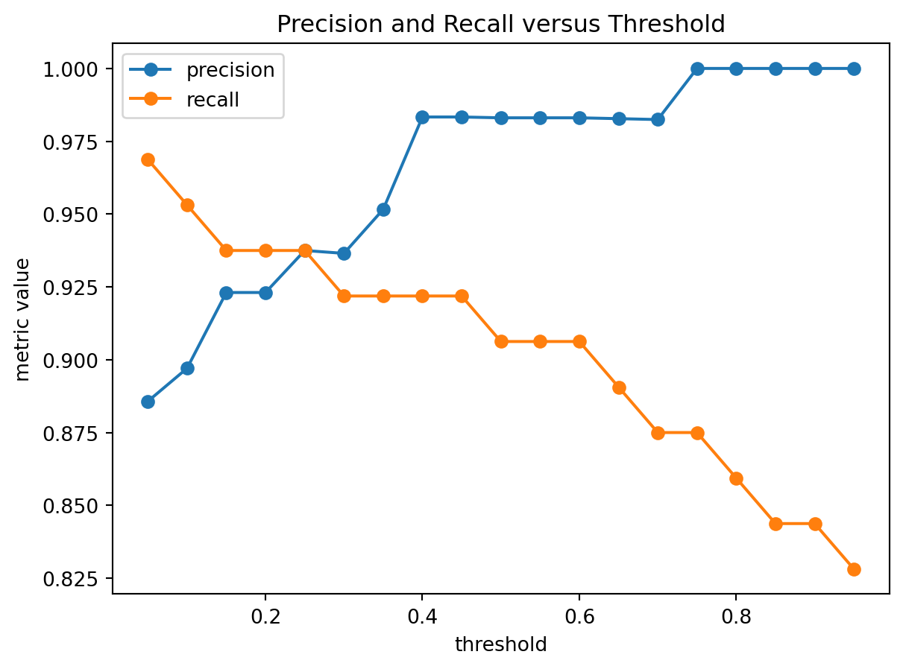
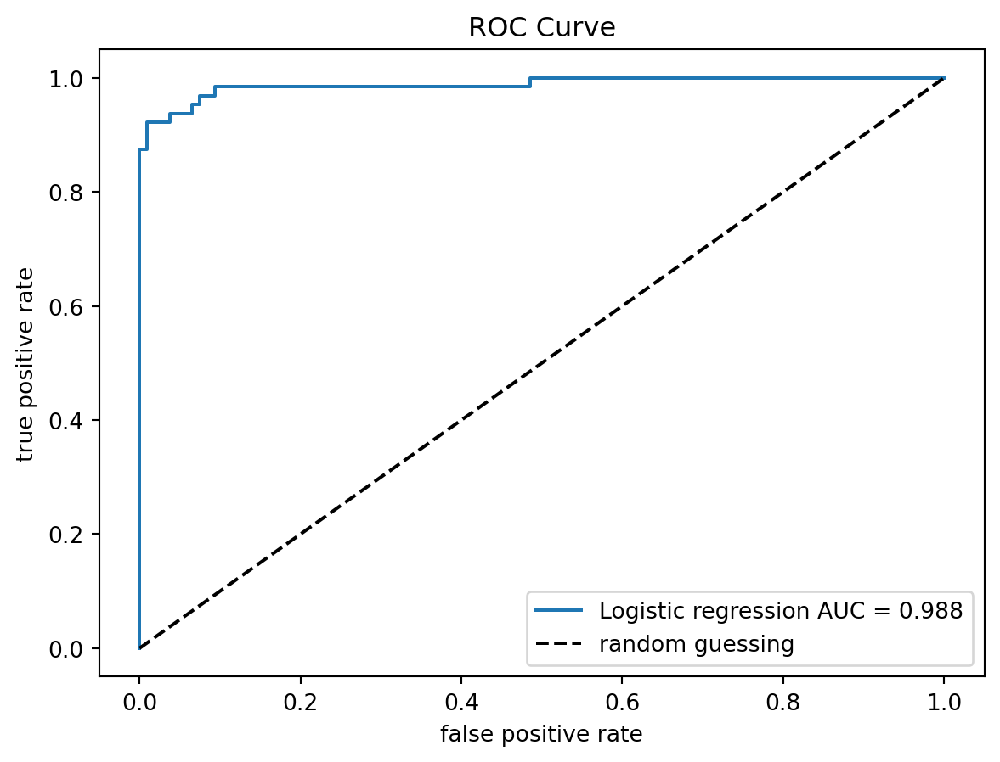
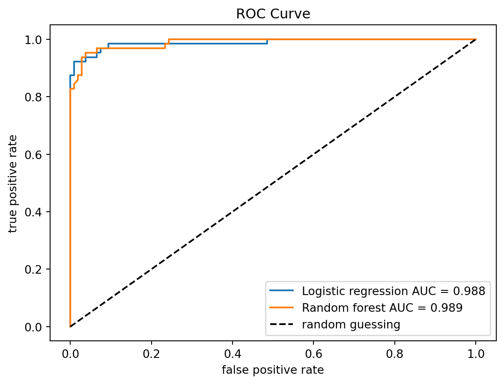
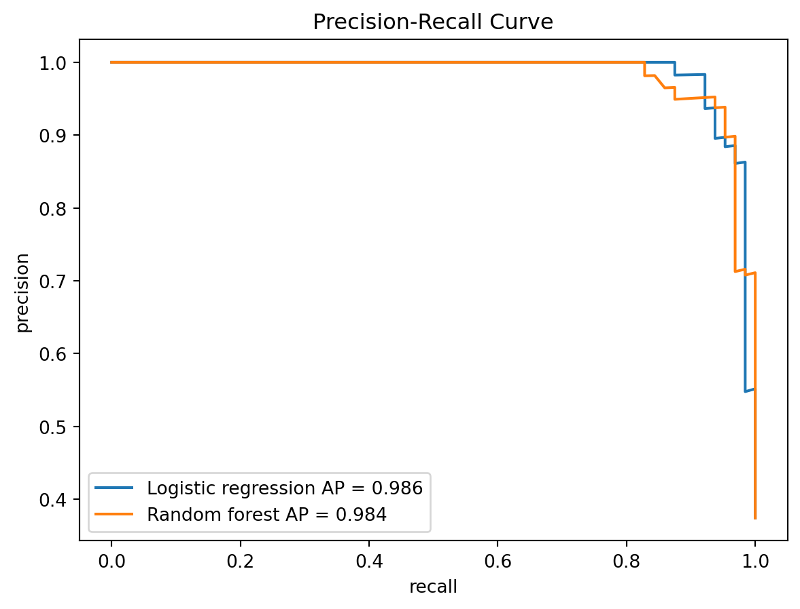
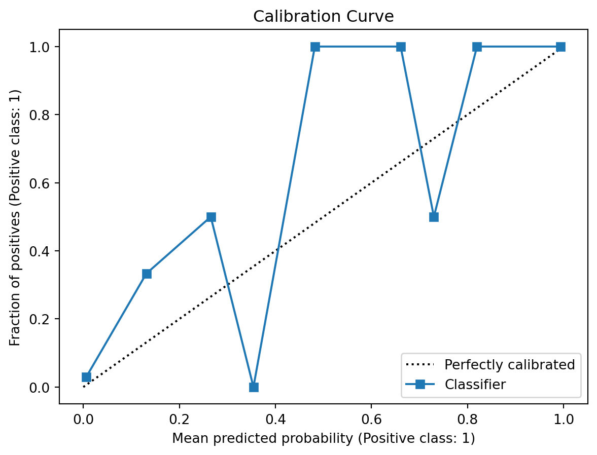
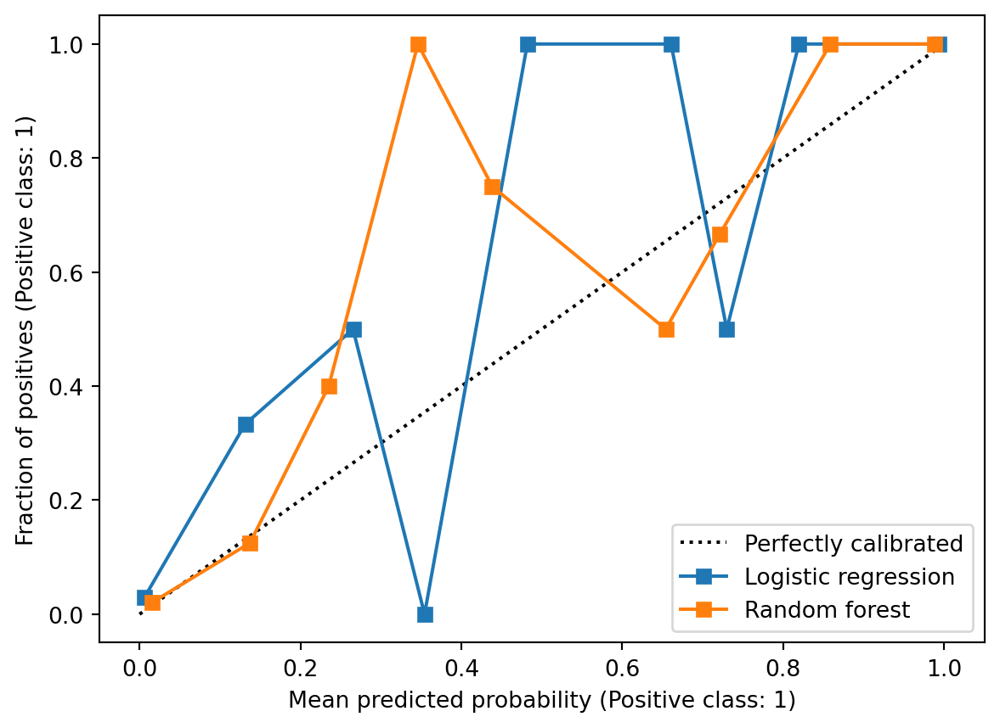

from sklearn.datasets import load_breast_cancer
from sklearn.model_selection import train_test_split
cancer = load_breast_cancer(as_frame=True)
X = cancer.data
y_original = cancer.target
y = 1 - y_original
X_train, X_test, y_train, y_test = train_test_split(
X, y, test_size=0.3, stratify=y, random_state=1
)2 Classification Decisions and Evaluation
Unlike regression, where metrics such as Mean Squared Error (MSE) evaluate prediction error along a continuous scale, classification evaluation is fundamentally more nuanced.
A modern statistical learning classifier often produces a score or estimated probability rather than directly outputting a categorical decision. For example, a model may estimate
\[ \hat p(x)=\Pr(Y=1\mid X=x), \]
and a separate decision rule then converts this soft prediction into a hard classification. As a result, classification performance can be evaluated from several different perspectives.
Broadly speaking, classification evaluation can be divided into three related but distinct goals.
| Goal | Main question | Common tools |
|---|---|---|
| Decision quality | Are the final classification decisions good? | Accuracy, precision, recall, F1-score |
| Ranking quality | Are positive observations ranked above negative observations? | ROC curve, AUC, PR curve |
| Probability quality | Are predicted probabilities numerically trustworthy? | Calibration curve, Brier score, log loss |
These goals are related but not equivalent. Accurate estimation of \(\Pr(Y\mid X)\) is the most informative objective because it naturally supports both ranking and decision-making. In contrast, good performance on a threshold-based metric such as accuracy does not guarantee well-calibrated probabilities or reliable rankings.
In practice, however, decision quality is often easier to achieve and is frequently the primary objective in applied statistical learning. Many real-world applications ultimately require concrete actions, such as approving a loan, detecting fraud, or diagnosing disease. Consequently, threshold-based metrics such as accuracy, precision, recall, and F1-score often play the central role in applied machine learning.
Note
Classification evaluation can become quite sophisticated and may involve ranking performance, probability calibration, cost-sensitive learning, threshold optimization, and decision theory.
In this course, however, our primary goal is to understand the core ideas of statistical learning and predictive modeling rather than to develop a complete theory of statistical decision making. Therefore, we will mainly focus on accuracy and closely related threshold-based classification metrics.
2.1 Decision quality
Decision quality evaluates the final hard classifications after applying a threshold to predicted scores or probabilities.
This perspective focuses on whether the model makes useful decisions in practice. Metrics such as accuracy, precision, recall, and F1-score belong to this category.
2.1.1 Binary Classification Setup
Suppose the response is binary:
\[ Y\in\{0,1\}. \]
We call \(Y=1\) the positive class and \(Y=0\) the negative class.
A classifier produces a predicted label
\[ \hat Y\in\{0,1\}. \]
The four possible outcomes are summarized by the confusion matrix.
| Predicted positive | Predicted negative | |
|---|---|---|
| True positive class | TP | FN |
| True negative class | FP | TN |
Here, TP means true positive, FP means false positive, FN means false negative, TN means true negative.
The confusion matrix is the starting point for most threshold-based classification metrics.
2.1.2 Accuracy
Accuracy is the proportion of correctly classified observations:
\[ \text{Accuracy} = \frac{TP+TN}{TP+FP+FN+TN}. \]
Accuracy is simple and useful when:
- the classes are reasonably balanced,
- false positives and false negatives have similar costs,
- the decision threshold is already fixed and meaningful.
However, accuracy can be misleading.
Suppose only \(1\%\) of observations are positive. A classifier that always predicts negative has \(99\%\) accuracy, but it never detects a positive case. In many applications, that classifier is useless.
CautionAccuracy is not enough
Accuracy implicitly treats all mistakes as equally costly.
When classes are imbalanced or error costs are asymmetric, accuracy can hide the most important behavior of the classifier.
2.1.3 Recall (sensitivity)
Recall is defined as
\[ \text{Recall} = \frac{TP}{TP+FN}. \]
Recall answers the question:
Among all truly positive observations, how many did we detect?
In probability notation,
\[ \text{Recall} = P(\hat Y=1\mid Y=1). \]
Recall is also called sensitivity, or true positive rate (TPR).
High recall means few false negatives. Low recall means many true positive cases were missed.
NoteRecall and Statistical Power
Recall has a direct connection to hypothesis testing.
Suppose we think of the classification problem as testing
\[ H_0:Y=0 \quad\text{versus}\quad H_1:Y=1. \]
Predicting positive is like rejecting \(H_0\). Predicting negative is like failing to reject \(H_0\).
Under this interpretation:
- a false positive is a Type I error,
- a false negative is a Type II error,
- recall plays a role analogous to statistical power.
Thus
\[ \text{Recall} = 1-\text{Type II error rate}. \]
Recall measures the ability to detect true signals.
2.1.4 Precision
Precision is defined as
\[ \text{Precision} = \frac{TP}{TP+FP}. \]
Precision answers the question:
Among all observations predicted positive, how many are truly positive?
In probability notation,
\[ \text{Precision} = P(Y=1\mid \hat Y=1). \]
Precision is also called positive predictive value.
High precision means positive predictions are trustworthy. Low precision means many predicted positives are false alarms.
NotePrecision vs Recall
Precision and recall condition on different events.
Recall conditions on the truth:
\[ P(\hat Y=1\mid Y=1). \]
Precision conditions on the prediction:
\[ P(Y=1\mid \hat Y=1). \]
This distinction is very important.
Recall asks whether we find the positives. Precision asks whether our positive discoveries are reliable. Precision depends strongly on class prevalence.
2.1.5 F1 Score
The F1 score combines precision and recall:
\[ F_1 = \frac{2PR}{P+R}, \]
where \(P\) is precision and \(R\) is recall.
Equivalently,
\[ F_1 = \frac{2TP}{2TP+FP+FN}. \]
The F1 score is the harmonic mean of precision and recall.
The harmonic mean strongly penalizes imbalance. If precision is high but recall is near zero, then F1 is near zero. If recall is high but precision is near zero, then F1 is also near zero.
F1 is useful when we want a single number that balances precision and recall. However, it assumes precision and recall are equally important. In applications where one type of error is more costly, a different metric or an explicit cost function may be better.
Note
F1 ignores true negatives entirely.
This can be useful for rare event detection, where the number of true negatives may dominate the dataset and make accuracy misleading.
2.1.6 Recall vs Precision
2.1.6.1 Bayes’ Rule and Class Imbalance
Precision and recall are connected by Bayes’ rule.
Let \(\pi=P(Y=1)\) be the prevalence of the positive class.
Proposition 2.1 \[ \text{Precision} = P(Y=1\mid \hat Y=1) = \frac{TPR\cdot\pi} {TPR\cdot\pi+FPR(1-\pi)}. \]
This formula shows why precision can be low for rare events: when \(\pi\) is small, even a modest false positive rate can create many false positives.
Click to expand.
Let
\[ TPR=P(\hat Y=1\mid Y=1)=\text{Recall} \]
and
\[ FPR=P(\hat Y=1\mid Y=0). \]
Then by Bayes’ Rule,
\[ \begin{split} \text{Precision} =& P(Y=1\mid \hat Y=1)\\ =&\frac{P(\hat Y=1\mid Y=1)P(Y=1)}{P(\hat Y=1\mid Y=1)P(Y=1)+P(\hat Y=1\mid Y=0)P(Y=0)}\\ =& \frac{TPR\cdot \pi} {TPR\cdot \pi+FPR\cdot(1-\pi)}. \end{split} \]
Example 2.1 (Rare Event Example)
Click to expand.
Suppose there are 10,000 observations:
- 100 positives,
- 9,900 negatives.
Assume the classifier has:
\[ TPR=0.90, \quad FPR=0.05. \]
Then:
\[ TP=90, \quad FP=495. \]
The recall is high:
\[ \text{Recall} = 0.90. \]
But precision is only
\[ \text{Precision} = \frac{90}{90+495} \approx 0.154. \]
Most predicted positives are false positives. This is why precision-recall analysis is especially important for imbalanced data.2.1.6.2 Classification Thresholds
Many classifiers first produce a score or estimated probability:
\[ \hat p(x)=P(Y=1\mid X=x). \]
To make a hard classification, we choose a threshold \(c\):
\[ \hat Y = \begin{cases} 1, & \hat p(x)>c,\\ 0, & \hat p(x)\le c. \end{cases} \]
The default decision threshold is often \(c=0.5\), but this is not always the optimal choice. Changing the threshold changes the confusion matrix, and therefore also changes metrics such as accuracy, precision, recall, false positive rate (FPR), and F1 score.
To better understand the precision–recall tradeoff, let us examine how altering the decision threshold changes the behavior of a classifier.
| Decision Threshold | TP | TN | FP | FN | Recall | Precision | Classifier Behavior |
|---|---|---|---|---|---|---|---|
| Lower threshold | Non-decreasing | Non-increasing | Non-decreasing | Non-increasing | Non-decreasing | May decrease | |
| Higher threshold | Non-increasing | Non-decreasing | Non-increasing | Non-decreasing | Non-increasing | May increase |
Lowering the threshold classifies more observations as positive. Therefore, both true positives (TP) and false positives (FP) may increase, while false negatives (FN) decrease.
Raising the threshold classifies more observations as negative. Therefore, both true negatives (TN) and false negatives (FN) may increase, while true positives (TP) decrease.
Example 2.2 (Example: Precision Is Not Strictly Monotone)
Click to expand.
Consider a small validation dataset with five observations. The model outputs predicted probabilities \(\hat P(Y=1 \mid X)\), ordered from highest to lowest.
| Instance | Predicted Probability | True Label |
|---|---|---|
| A | 0.95 | 1 |
| B | 0.90 | 0 |
| C | 0.85 | 1 |
| D | 0.80 | 1 |
| E | 0.70 | 0 |
As the threshold is raised, fewer observations are classified as positive.
| Threshold | Predicted Positives | TP | FP | Precision |
|---|---|---|---|---|
| 0.75 | A, B, C, D | 3 | 1 | \(3/4 = 0.75\) |
| 0.82 | A, B, C | 2 | 1 | \(2/3 \approx 0.67\) |
| 0.88 | A, B | 1 | 1 | \(1/2 = 0.50\) |
| 0.92 | A | 1 | 0 | \(1/1 = 1.00\) |
In this example, raising the threshold first decreases precision because some true positives are removed while the false positive remains. Precision increases only after the false positive is also removed.
This shows that precision can move up or down as the threshold changes, depending on the labels of the observations crossing the threshold.
NoteThresholds are decisions
- The fitted model may estimate probabilities.
- The threshold determines the action.
Model fitting and decision making are related, but they are not the same thing.
2.1.6.3 Decision Theory and Error Costs
Suppose a false positive has cost \(C_{FP}\) and a false negative has cost \(C_{FN}\).
If a model estimates
\[ p(x)=P(Y=1\mid X=x), \]
then the expected cost of predicting positive is
\[ \text{Cost}(1\mid x) = C_{FP}P(Y=0\mid X=x) = C_{FP}(1-p(x)). \]
The expected cost of predicting negative is
\[ \text{Cost}(0\mid x) = C_{FN}P(Y=1\mid X=x) = C_{FN}p(x). \]
We should predict positive when
\[ C_{FP}(1-p(x)) < C_{FN}p(x). \]
Solving this inequality gives
\[ p(x) > \frac{C_{FP}}{C_{FP}+C_{FN}}. \]
Thus the optimal threshold is
\[ c^* = \frac{C_{FP}}{C_{FP}+C_{FN}}. \]
This threshold minimizes the expected classification cost under the assumed probability model.
If false negatives are very costly, then \(C_{FN}\) becomes large, which lowers the threshold. In this case, the classifier predicts the positive class more aggressively in order to reduce missed detections.
Example 2.3 (Medical Screening) In medical screening, missing a serious disease may be much worse than sending a healthy patient for an additional test. Therefore false negatives are costly.
The threshold should often be lower, so the classifier prioritizes recall.
Example 2.4 (Spam Filtering) In spam filtering, putting an important legitimate email into spam may be very costly to the user. Therefore false positives may be more costly.
The threshold should often be higher, so the classifier prioritizes precision.
2.2 Ranking quality
Ranking quality evaluates whether positive observations tend to receive higher scores than negative observations.
This perspective is important when the classification threshold is not fixed or when the main goal is prioritization rather than direct classification. ROC curves, AUC, and precision–recall curves are commonly used to evaluate ranking performance.
2.2.1 ROC
ROC stands for receiver operating characteristic. An ROC curve plots: \[ TPR = \frac{TP}{TP+FN} \quad\text{ against }\quad FPR = \frac{FP}{FP+TN} \] as the probability threshold varies from 0 to 1.
2.2.2 ROC and Hypothesis Testing
ROC curves have a natural hypothesis testing interpretation. As discussed before,
- TPR is power,
- FPR is Type I error rate.
Therefore an ROC curve shows
\[ \text{power} \quad\text{versus}\quad \text{Type I error rate} \]
across all possible thresholds.
The ideal classifier reaches the upper-left corner:
\[ FPR=0, \quad TPR=1. \]
A classifier close to the diagonal line behaves almost like random guessing.
2.2.3 AUC
AUC refers to the Area Under the ROC Curve. It summarizes ranking performance across all possible classification thresholds.
Let \(s(X^+)\) be the score for a randomly selected positive observation, and let \(s(X^-)\) be the score for a randomly selected negative observation. Then
\[ AUC = P\left(s(X^+)>s(X^-)\right), \]
up to small corrections for ties.
Thus AUC has a clean probabilistic interpretation:
AUC is the probability that a randomly selected positive observation receives a higher score than a randomly selected negative observation.
This explains why AUC is threshold-free. It evaluates ranking quality rather than the quality of a particular classification decision.
Importantly, AUC evaluates relative ordering rather than absolute probability accuracy.
CautionAUC is not calibration
AUC can be excellent even when predicted probabilities are numerically inaccurate.
AUC only asks whether positive observations tend to receive higher scores than negative observations. It does not ask whether the predicted probabilities themselves are trustworthy or well calibrated.
2.2.4 Precision-Recall Curve
A precision-recall curve plots precision against recall as the classification threshold changes.
It is especially useful when the positive class is rare. In imbalanced datasets, an ROC curve may look strong because the false positive rate is divided by the large number of true negatives. However, precision directly measures how many predicted positives are actually positive.
Average precision summarizes the precision-recall curve as a single number. Like AUC, it evaluates ranking behavior across thresholds, but it focuses more directly on performance for the positive class.
2.3 Probability Quality
Probability quality asks whether predicted probabilities can be interpreted as actual probabilities.
For example, suppose a model predicts \(\hat p(x)=0.8\). If the model is well calibrated, then among many observations with predicted probability near \(0.8\), roughly \(80\%\) should truly belong to the positive class.
Thus probability quality concerns whether predicted probabilities are numerically trustworthy.
Unlike decision quality or ranking quality, probability quality focuses on the accuracy of the probability estimates themselves. Calibration curves, Brier score, and log loss are commonly used to evaluate probability quality.
Note
In many practical machine learning applications, probability quality is less important than classification accuracy or ranking performance.
Therefore, in this course, we will mainly focus on threshold-based classification metrics such as accuracy, precision, recall, and F1 score. This section is included primarily to provide a broader view of classification evaluation.
2.3.1 Calibration Curve
A calibration curve, also called a reliability diagram, is constructed as follows:
- Divide observations into bins according to predicted probability.
- For each bin, compute the average predicted probability.
- Compute the observed positive proportion in each bin.
- Plot observed proportion against average predicted probability.
For a perfectly calibrated model, the curve follows the diagonal line.
- If the curve lies below the diagonal, the model is overconfident.
- If the curve lies above the diagonal, the model is underconfident.
2.4 Model Tuning versus Threshold Tuning
In classification, model fitting and decision making should be viewed as separate problems.
First, the model estimates a score or probability:
\[ \hat p(x) \approx \Pr(Y=1\mid X=x). \]
Second, we choose a threshold to convert this probability into an action.
Model tuning affects the quality of \(\hat p(x)\) itself. This is where ideas such as bias, variance, regularization, and model complexity matter. A very flexible classifier may capture nonlinear structure, but its probability estimates may be unstable or poorly calibrated.
Threshold tuning does not change \(\hat p(x)\). It only changes the decision rule built on top of the fitted probabilities. Lower thresholds usually increase recall and false positives; higher thresholds usually increase precision and reduce false positives.
Thus:
- model tuning controls the fitted scores or probabilities;
- threshold tuning controls the action taken from those scores;
- calibration checks whether the probabilities are numerically trustworthy.
A good classifier therefore involves not only learning accurate scores, but also choosing appropriate decision rules for the application.
2.5 Python Example: Breast Cancer Classification
We now use the breast cancer dataset from sklearn. The goal is to classify tumors as malignant or benign. This example shows how to compute threshold-based metrics, ROC and PR curves, and calibration curves.
In this example, please mainly focus on the evaluation metrics. Other part like modeling, splitting, etc. will be introduced in later sections.
2.5.1 Load the dataset
First load the data and split it into training and test sets. By default, the dataset uses 0 for malignant and 1 for benign. Since many classification metrics interpret label 1 as the positive class, we redefine malignant as 1. Therefore we need to modify the y value.
We may want to see the distribution of the test set.
import pandas as pd
pd.Series(y_test).value_counts().sort_index()target
0 107
1 64
Name: count, dtype: int642.5.2 Fit models
We fit logistic regression model as an example, which is a typical strong baseline model.
from sklearn.pipeline import make_pipeline
from sklearn.preprocessing import StandardScaler
from sklearn.linear_model import LogisticRegression
logit = make_pipeline(
StandardScaler(),
LogisticRegression(max_iter=5000),
)
logit.fit(X_train, y_train)
logit_prob = logit.predict_proba(X_test)[:, 1]Note that logit.predict_proba(X_test) returns 2 columns:
- column 0: \(\Pr(Y=0\mid X)\),
- column 1: \(\Pr(Y=1\mid X)\).
Since we want the predicted probability for the positive class (y=1), we select the second column.
2.5.3 Confusion Matrix and Basic Metrics
All decision quality metrics can be computed using functions from sklearn.metrics. They are used to compare two list-like objects, while the true labels are passed first and the predicted labels second.
By default, predict() in sklearn uses threshold \(0.5\) for binary classification.
from sklearn.metrics import accuracy_score, precision_score, recall_score, f1_score
y_pred = logit.predict(X_test)
acc = accuracy_score(y_test, y_pred)
prec = precision_score(y_test, y_pred)
rec = recall_score(y_test, y_pred)
f1 = f1_score(y_test, y_pred)We can also compute the confusion matrix and extract the values of TP, TN, FP, and FN from it.
from sklearn.metrics import confusion_matrix
confusion_matrix(y_test, y_pred)array([[106, 1],
[ 6, 58]])TN, FP, FN, TP = confusion_matrix(y_test, y_pred).ravel()They are listed in this particular order since 0 stands for negative and 1 stands for positive in this example.
2.5.4 Modifying Thresholds
The default model use 0.5 as the threshold in sklearn. If you want to change the threshold, you may manually write the code.
threshold = 0.3
logit_prob = logit.predict_proba(X_test)[:, 1]
y_pred = (logit_prob >= threshold).astype(int)You may also use FixedThresholdClassifier from sklearn.model_selection when you want the threshold to be part of the estimator workflow.
from sklearn.model_selection import FixedThresholdClassifier
threshold = 0.3
model_with_threshold = FixedThresholdClassifier(
make_pipeline(
StandardScaler(),
LogisticRegression(max_iter=5000),
),
threshold=threshold,
)
model_with_threshold.fit(X_train, y_train)
y_pred_wrapper = model_with_threshold.predict(X_test)
Note
FixedThresholdClassifier is useful when the threshold is fixed in advance.
However, there might be cases that you want to adjust the threshold according to the dataset. In this case you may want to use TunedThresholdClassifierCV. We will talk about it in details later in the Logistic regression section.
2.5.5 Tuning Thresholds
In order to make the tuning process easier, we build an interface to quickly display the results.
def classification_summary(y_true, prob, threshold=0.5):
pred = (prob >= threshold).astype(int)
TN, FP, FN, TP = confusion_matrix(y_true, pred).ravel()
return {
"threshold": threshold,
"TP": TP,
"FP": FP,
"FN": FN,
"TN": TN,
"accuracy": accuracy_score(y_true, pred),
"precision": precision_score(y_true, pred, zero_division=0),
"recall": recall_score(y_true, pred, zero_division=0),
"f1": f1_score(y_true, pred, zero_division=0),
}- 1
-
zero_division=0means that if the denominator is 0 the return value will be set to 0. This always happens in this case since some of the counts might be 0.
Now examine how metrics change as the threshold changes. To save space I only show the first few rows of the table.
import numpy as np
import pandas as pd
thresholds = np.linspace(0.05, 0.95, 19)
threshold_results = []
for threshold in thresholds:
row = classification_summary(y_test, logit_prob, threshold=threshold)
threshold_results.append(row)
threshold_df = pd.DataFrame(threshold_results)
threshold_df.head()| threshold | TP | FP | FN | TN | accuracy | precision | recall | f1 | |
|---|---|---|---|---|---|---|---|---|---|
| 0 | 0.05 | 62 | 8 | 2 | 99 | 0.941520 | 0.885714 | 0.968750 | 0.925373 |
| 1 | 0.10 | 61 | 7 | 3 | 100 | 0.941520 | 0.897059 | 0.953125 | 0.924242 |
| 2 | 0.15 | 60 | 5 | 4 | 102 | 0.947368 | 0.923077 | 0.937500 | 0.930233 |
| 3 | 0.20 | 60 | 5 | 4 | 102 | 0.947368 | 0.923077 | 0.937500 | 0.930233 |
| 4 | 0.25 | 60 | 4 | 4 | 103 | 0.953216 | 0.937500 | 0.937500 | 0.937500 |
Plot precision and recall as functions of the threshold.
import matplotlib.pyplot as plt
plt.plot(threshold_df["threshold"], threshold_df["precision"], marker="o", label="precision")
plt.plot(threshold_df["threshold"], threshold_df["recall"], marker="o", label="recall")
plt.xlabel("threshold")
plt.ylabel("metric value")
plt.title("Precision and Recall versus Threshold")
plt.legend()
As the threshold increases, the classifier becomes more conservative in predicting the positive class. This often reduces false positives and increases precision, but may also increase false negatives and reduce recall.
2.5.6 Choosing a Threshold from Costs
In a medical setting, false negatives may be especially important because they correspond to missed malignant cases. Suppose a false negative is 5 times as costly as a false positive:
\[ C_{FN}=5, \quad C_{FP}=1. \]
The decision-theoretic threshold is
\[ c^* = \frac{C_{FP}}{C_{FP}+C_{FN}} = \frac{1}{1+5} \approx 0.167. \]
Then the corresponding result is
cost_fp = 1
cost_fn = 5
cost_threshold = cost_fp / (cost_fp + cost_fn)
classification_summary(
y_test,
logit_prob,
threshold=cost_threshold,
){'threshold': 0.16666666666666666,
'TP': np.int64(60),
'FP': np.int64(5),
'FN': np.int64(4),
'TN': np.int64(102),
'accuracy': 0.9473684210526315,
'precision': 0.9230769230769231,
'recall': 0.9375,
'f1': 0.9302325581395349}This lower threshold prioritizes recall. It predicts malignant more aggressively because missing a malignant tumor is assumed to be more costly. Note that this threshold formula assumes that the predicted probabilities are reasonably calibrated so that they can be interpreted as approximate event probabilities.
2.5.7 ROC Curve and AUC
Unlike accuracy or precision, ROC analysis does not depend on a single fixed threshold. Instead, it studies model performance across all possible thresholds using the predicted probabilities or scores.
ROC curve and AUC can be computed using roc_curve and roc_auc_score from sklearn.metrics.
from sklearn.metrics import roc_curve, roc_auc_score
logit_fpr, logit_tpr, _ = roc_curve(y_test, logit_prob)
logit_auc = roc_auc_score(y_test, logit_prob)
plt.plot(logit_fpr, logit_tpr, label=f"Logistic regression AUC = {logit_auc:.3f}")
plt.plot([0, 1], [0, 1], "k--", label="random guessing")
plt.xlabel("false positive rate")
plt.ylabel("true positive rate")
plt.title("ROC Curve")
plt.legend()
We may fit another model and draw their ROC curve and AUC together in one plot to compare them.
from sklearn.ensemble import RandomForestClassifier
rf = RandomForestClassifier(
n_estimators=500, max_features="sqrt", random_state=1, n_jobs=-1
)
rf.fit(X_train, y_train)
rf_prob = rf.predict_proba(X_test)[:, 1]
rf_fpr, rf_tpr, _ = roc_curve(y_test, rf_prob)
rf_auc = roc_auc_score(y_test, rf_prob)
plt.plot(logit_fpr, logit_tpr, label=f"Logistic regression AUC = {logit_auc:.3f}")
plt.plot(rf_fpr, rf_tpr, label=f"Random forest AUC = {rf_auc:.3f}")
plt.plot([0, 1], [0, 1], "k--", label="random guessing")
plt.xlabel("false positive rate")
plt.ylabel("true positive rate")
plt.title("ROC Curve")
plt.legend()
The ROC curve summarizes ranking performance across thresholds. AUC may be interpreted as the probability that a randomly chosen positive observation receives a higher score than a randomly chosen negative observation. Then a larger AUC means the model more often ranks malignant cases above benign cases.
2.5.8 Precision-Recall Curve
The precision-recall curve can be produced in a similar way.
from sklearn.metrics import precision_recall_curve, average_precision_score
logit_precision, logit_recall, _ = precision_recall_curve(y_test, logit_prob)
rf_precision, rf_recall, _ = precision_recall_curve(y_test, rf_prob)
logit_ap = average_precision_score(y_test, logit_prob)
rf_ap = average_precision_score(y_test, rf_prob)
plt.plot(logit_recall, logit_precision, label=f"Logistic regression AP = {logit_ap:.3f}")
plt.plot(rf_recall, rf_precision, label=f"Random forest AP = {rf_ap:.3f}")
plt.xlabel("recall")
plt.ylabel("precision")
plt.title("Precision-Recall Curve")
plt.legend()
For highly imbalanced datasets, precision–recall curves are often more informative than ROC curves because ROC curves may appear overly optimistic when the negative class dominates.
2.5.9 Optional: Calibration Curves
Click to expand.
Calibration focuses on probability quality rather than threshold-based decision quality or ranking quality. Calibration curves can be produced using CalibrationDisplay from sklearn.calibration.
from sklearn.calibration import CalibrationDisplay
CalibrationDisplay.from_predictions(y_test, logit_prob, n_bins=10)
plt.title("Calibration Curve");
This is a packaged function provided by sklearn. If we want to plot multiple curves together in one plot, we can put the axis in the argument of this function.
fig, ax = plt.subplots()
CalibrationDisplay.from_predictions(
y_test, logit_prob, n_bins=10, name="Logistic regression", ax=ax
)
CalibrationDisplay.from_predictions(
y_test, rf_prob, n_bins=10, name="Random forest", ax=ax
)
The calibration curve compares predicted probabilities with observed frequencies.
Calibration curves diagnose probability quality; they do not by themselves recalibrate the model. Recalibration methods such as Platt scaling or isotonic regression can change the probability scale, but they do not necessarily improve AUC because AUC mainly depends on ranking.